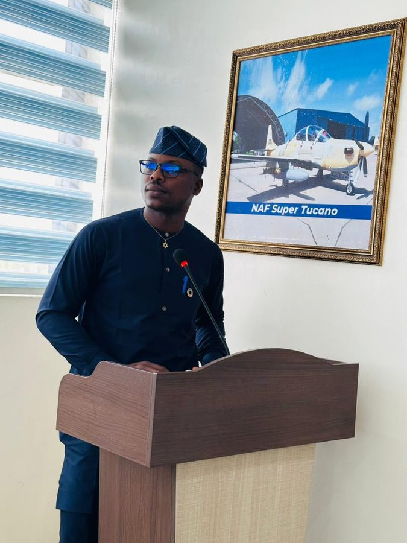

Structure First
I write the HTML outline of a page before any styling, so the document tree is meaningful on its own and remains readable without CSS.
My name is Nnamdi Ignatius Ignatius and I am an undergraduate student in the Department of Information Technology at Miva Open University. My studies cover the fundamentals of computing, web technologies, databases and data analysis.
My interest in web development began with understanding how a browser turns plain text into a document tree, and how CSS and JavaScript then work on that tree. This portfolio is the practical outcome of that interest: the structure is written in HTML, the presentation is handled entirely by an external stylesheet, and every interactive feature is written in plain JavaScript without any framework.
Outside formal coursework I enjoy reading, research and photography, all of which train the same habit that programming requires: paying attention to detail and checking an assumption before depending on it.

2026 – Present
Miva Open University. Coursework in web development, programming fundamentals, databases, networking and data analysis.
Current Semester
Practical work in HTML document structure, CSS layout and styling, and client-side scripting with JavaScript. This portfolio is the assessed laboratory project.
I write the HTML outline of a page before any styling, so the document tree is meaningful on its own and remains readable without CSS.
Content stays in HTML, presentation in the stylesheet and behaviour in the script. No inline styles and no inline event handlers are used.
Every layout is checked at mobile width first, then expanded for tablet and desktop using media queries.